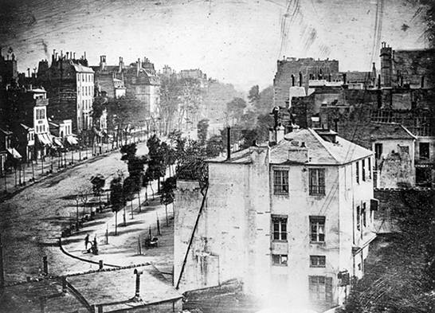

Photography is the art, application and practice of creating durable images by recording light, either electronically by means of an image sensor, or chemically by means of a light-sensitive material such as photographic film. It is employed in many fields of science, manufacturing (e.g., photolithography), and business, as well as its more direct uses for art, film and video production, recreational purposes, hobby, and mass communication.[1]

Typically, a lens is used to focus the light reflected or emitted from objects into a real image on the light-sensitive surface inside a camera during a timed exposure. With an electronic image sensor, this produces an electrical charge at each pixel, which is electronically processed and stored in a digital image file for subsequent display or processing. The result with photographic emulsion is an invisible latent image, which is later chemically "developed" into a visible image, either negative or positive depending on the purpose of the photographic material and the method of processing. A negative image on film is traditionally used to photographically create a positive image on a paper base, known as a print, either by using an enlarger or by contact printing.